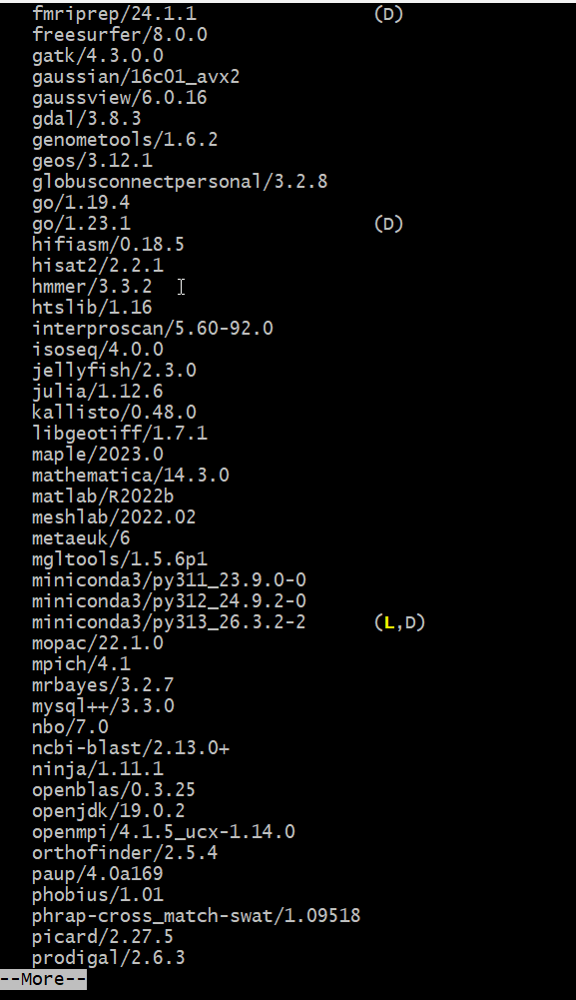

All in One View
Content from Why Software Modules?
Last updated on 2026-08-24 | Edit this page
Overview
Questions
- Why do we need environment modules on shared computing systems?
- What is an environment module and how does it work?
- How does Lmod modify your shell environment?
Objectives
- Understand the problem that environment modules solve
- Learn how Lmod modifies your shell environment
- Understand the difference between loading and installing software
The Problem: Conflicting Software Versions
The Version Conflict Problem
Imagine you’re working on Sagehen with two research groups. One group needs R version 3.6.0 for legacy analysis scripts that haven’t been updated in five years. Another group requires R version 4.2.3 for their latest genomics pipeline. Your colleague needs Gaussian 16 to run quantum chemistry simulations, but you need Gaussian 09 for continuity with your previous research.
Without a way to manage these different versions, installing them all
in the same locations (like /usr/bin or
/usr/lib) creates conflicts: - Programs and libraries
overwrite each other - Running R might load the wrong
version - Dependencies break unpredictably - Users can’t work on
different projects simultaneously
On a shared system with hundreds of users, this would be chaos.
The Solution: Environment Modules
Environment modules (managed by Lmod on Sagehen) solve this problem by dynamically modifying your shell environment. A module is essentially a collection of instructions that:
- Adds software locations to your
PATH(where the system looks for executable programs) - Sets
LD_LIBRARY_PATH(where the system looks for shared libraries) - Sets other environment variables needed by the software
- Possibly loads prerequisite modules
When you load a module, it’s like installing software temporarily in your current shell session without actually changing the filesystem.
How Lmod Modifies Your Environment
Let’s look at a practical example. When you load the R module:
Lmod runs a script that: - Adds the R installation’s bin
directory (e.g. /opt/.../r/4.5.1/bin) to your
PATH - Sets LD_LIBRARY_PATH to include R’s
libraries - Sets R_HOME to the installation directory -
Sets other R-specific variables
Now when you type R at the command line, the shell finds
the R executable in the path that was just added.
If you then load a different version:
Lmod removes the 4.5.1 entries and adds the 4.2.3 entries instead. No files are actually installed or removed; just your shell environment changes.
Module Naming Conventions
Modules follow the pattern software/version:
-
r/4.5.1: R version 4.5.1 -
r/4.2.3: R version 4.2.3 -
r: Same as the default, currentlyr/4.5.1(marked with D) -
miniconda3: The default version of miniconda3 -
miniconda3/py313_26.3.2-2: Specific version -
cuda/12.2.1: NVIDIA CUDA toolkit version 12.2.1
When you run module load r, you get the default. To load
a specific version, be explicit.
Challenge 1: Explore Available Modules
Output will vary, but a typical response shows:
R versions:
- r/4.2.2
- r/4.2.3
- r/4.4.1
- r/4.5.1 (D)
CUDA toolkit versions:
- cuda/11.8.0
- cuda/12.0.0
- cuda/12.2.1 (D)
Modules with defaults:
- miniconda3/py313_26.3.2-2 (D)
- r/4.5.1 (D)
- go/1.23.1 (D)The important point is that you can see all available options before loading.
- Environment modules solve the problem of multiple software versions on shared systems
- Modules temporarily modify your shell environment (PATH, LD_LIBRARY_PATH, etc.)
- No files are installed or removed; only your environment changes
- Modules follow the naming convention software/version
- Modules with (D) are defaults; specify versions explicitly to get other versions
Content from Finding and Loading Modules
Last updated on 2026-08-24 | Edit this page
Overview
Questions
- How do I find specific software on Sagehen?
- How do I load and unload modules?
- How do I learn what a module does before loading it?
- What if I need software that isn’t available?
Objectives
- Use
module availwith search patterns to find software - Load and unload modules with
module loadandmodule unload - Use
module helpandmodule showto inspect modules - Know what to do if software isn’t available
Searching for Software
On a cluster with hundreds of modules, finding specific software efficiently is essential.
Built-in filtering
Lmod can filter the listing itself – pass a search string to
module avail:
The match is a substring match against the whole module name
and version, so a single letter matches far too much – on
Sagehen this returns not just r/4.5.1 but also
ansys/2023r1, apptainer,
fmriprep, rstudio-server, rust,
trimmomatic, and dozens more, all because they contain an
“r” somewhere. Use a longer, more specific string:
module avail conda is a good example of why searching
matters: it finds both anaconda3 and
miniconda3. There is no standalone
python module on Sagehen – searching for
python finds nothing, because Python is provided
inside the conda distributions. When a direct name search comes
up empty, think about what the software might ship inside.
Deeper searches: spider and keyword
BASH
$ module spider gaussian # every version of a module, plus how to load it
$ module keyword chemistry # searches module descriptions, not just namesmodule spider knows about every module and version on
the system, and module keyword searches the descriptive
text – useful when you don’t know the package’s exact name.
Why not just pipe to grep?
You’ll see module avail -t | grep name suggested online,
but on Sagehen it returns nothing: Lmod prints the listing to
standard error rather than standard output, and this
Lmod version treats a trailing -t as a search
pattern rather than a flag (hence the confusing
No module(s) or extension(s) found!). If you want a grep
pipeline, the options must come before the subcommand and
stderr must be redirected:
The built-in filters above are simpler and always work – prefer them.
Loading and Unloading Modules
Your first module load
Now check what modules you have loaded:
To see what this module actually changed:
Unloading modules
When you’re done with software, unload it:
python now refers to the system Python (if it exists) or
isn’t available.
Key Commands Summary
| Command | Purpose |
|---|---|
module avail |
List all available modules |
module load <name> |
Load a module |
module list |
Show currently loaded modules |
module unload <name> |
Unload a module |
which <program> |
Show the full path to a program |
Learning What a Module Does
Check Before You Load
Always use module help before loading an
unfamiliar module. This prevents surprises and shows you what
dependencies will be automatically loaded.
Using module help
This prints whatever help text the module’s packager provided – typically a short description of the software, the version, and any usage notes. The amount of detail varies from module to module.
Understanding module dependencies
Some modules automatically load other modules they depend on (for
example, an MPI library or a maths library). When that happens,
module list after a single module load will
show more than one loaded module. That is normal – unloading
the module you asked for also removes what it pulled in.
When Software Isn’t Available
If you can’t find the software you need:
-
Double-check your search with
module avail nameandmodule spider name - Check the Sagehen documentation for software inventory
-
Request installation by emailing its-hpc@pomona.edu
with:
- Software name and version
- Research purpose
- License information (open-source, commercial, etc.)
- Links to documentation
BASH
$ module load go
$ module list
Currently Loaded Modules:
1) go/1.23.1
$ which go
/opt/.../go/1.23.1/bin/go
$ module unload go
$ which go
/usr/bin/which: no go in (...)The key insight: after unloading, the command is gone from your
PATH – you fall back to a system-wide copy if one exists,
or to nothing at all.
After module load r:
Currently Loaded Modules:
1) r/4.5.1After module unload r:
No modules loadedIf a module pulls in dependencies when it loads, those dependencies
can remain loaded after you unload it – Lmod treats them cautiously
because other loaded modules might also rely on them. If
module list still shows leftovers you don’t need, unload
them explicitly, or use module purge to clear
everything.
- Use
module availwith search terms orgrepto find software -
module loadactivates software;module unloaddeactivates it - Use
module helpto understand what a module does before loading - Use
module showto see exact environment modifications - Modules can automatically load prerequisites
- If software isn’t available, contact its-hpc@pomona.edu to request it
Content from Module Collections and Defaults
Last updated on 2026-08-24 | Edit this page
Overview
Questions
- How do I load multiple modules together?
- How do I switch between different versions of the same software?
- How can I save my module configuration and reload it later?
- How do I use modules in batch job scripts?
Objectives
- Load multiple modules for complex workflows
- Use
module swapto switch between versions - Use
module purgeto reset to a clean state - Create and manage personal module collections
- Write module commands in SLURM job scripts
Loading Multiple Modules
Many research workflows require multiple pieces of software:
Swapping Module Versions
To switch between software versions, use
module swap:
BASH
$ module load cuda/11.8.0
$ module swap cuda cuda/12.2.1
$ module list
Currently Loaded Modules:
1) cuda/12.2.1The swap command unloads the old version and loads the
new one in a single operation, which is cleaner than separate
unload/load commands.
Resetting Everything: module purge
If you load many modules and need to start fresh:
Use module purge to start a fresh shell environment,
avoid conflicts when switching projects, or test if your code really
needs all those modules.
Default Modules at Login
When you first log into Sagehen, certain modules might be
automatically loaded based on system configuration or your
.bashrc file. Use module purge to clear them,
then load only what you need for your current task.
Saving Module Collections
Save Time with Collections
Manually loading the same modules every time gets tedious and error-prone. Module collections let you save a set of modules once and restore them with a single command.
Save your current module configuration as a named collection:
Lmod stores it in ~/.lmod.d/biostats.
Setting a Default Collection
Make a collection load automatically when you log in:
Now every time you SSH to Sagehen, those modules are loaded automatically. To remove the automatic loading:
Using Modules in Job Scripts
Critical for Reproducibility
When you submit a batch job to SLURM, your current module configuration is not automatically passed to the job. Always load modules in your job script.
Example job script
BASH
#!/bin/bash
#SBATCH --job-name=ranalysis
#SBATCH --time=00:30:00
#SBATCH --cpus-per-task=4
#SBATCH --mem=16G
# Load required modules
module load openblas/0.3.25
module load r/4.5.1
module load miniconda3
# Run your analysis
Rscript analysis.RYou can also restore a collection in a job script:
BASH
#!/bin/bash
#SBATCH --job-name=genomics
#SBATCH --time=04:00:00
#SBATCH --cpus-per-task=8
#SBATCH --mem=32G
module restore genomics_pipeline
./run_analysis.shChallenge 1: Create and Restore a Collection
- Load at least three different modules (e.g., openblas, miniconda3, r)
- Save them as a collection called “myworkflow”
- Purge all modules
- Restore the collection
- Verify all modules are reloaded
After restore:
Currently Loaded Modules:
1) openblas/0.3.25 2) miniconda3/py313_26.3.2-2 3) r/4.5.1The collection saves the exact versions you had loaded and restores them perfectly.
Challenge 2: Write a Job Script with Modules
Create a file called test_job.sh with: 1. SLURM header
requesting 2 CPUs, 4GB RAM, 10 minutes 2. Load the openblas and
miniconda3 modules 3. Print “Modules loaded:” followed by
module list 4. Echo “Job completed”
When submitted with sbatch test_job.sh, it creates a job
that explicitly loads modules before running commands. Check the output
with squeue or look in the log file (slurm-JOBID.out). The
job script explicitly loads modules rather than relying on your login
environment.
- Load multiple modules with
module load module1 module2 module3 - Use
module swapto switch versions cleanly - Use
module purgeto start fresh - Save configurations with
module save <name>and restore withmodule restore <name> - Set
module save defaultto auto-load modules on login - Always load modules in job scripts; don’t rely on your login environment
Content from Introduction to Conda
Last updated on 2026-08-24 | Edit this page
Overview
Questions
- Why do I need Conda when I already have modules?
- How do I create an isolated Python environment?
- How do I activate and deactivate environments?
Objectives
- Understand the difference between modules and conda environments
- Create and activate conda environments
- Verify which Python is being used
- Deactivate environments when done
Modules vs. Conda: When to Use Each
Modules load pre-installed software managed by system administrators: - Good for: Large applications, compiled binaries, cluster-wide tools - Examples: R, GAMESS, Gaussian, GCC
Conda manages Python/R packages in isolated environments: - Good for: Python libraries, package dependencies, project-specific stacks - Examples: numpy, scipy, matplotlib, scikit-learn, TensorFlow
Most workflows use both: modules for system software, conda for language-specific packages.
Your First Conda Environment
Step 1: Load Miniconda
Miniconda is a minimal conda distribution available as a module:

py313_26.3.2-2 is the default (D) —
and often already loaded (L).Step 2: Create an environment
Create a new conda environment for a specific project:
This creates an environment called “myproject” with Python 3.11. Conda asks for confirmation:
The following packages will be installed:
...
Proceed? [y/N] yPress y to proceed.
Step 3: Activate the environment
Notice the prompt changes to show (myproject). You’re
now inside the environment.
Listing Environments
See all conda environments on your account:
BASH
$ conda env list
# conda environments:
#
base /opt/.../miniconda3/py313_26.3.2-2
myproject /rhome/<myusername>/.conda/envs/myproject
analysis_2024 /rhome/<myusername>/.conda/envs/analysis_2024The base environment is miniconda3 itself; other
environments are yours.
WARNING: Never Install into Base
DO NOT run conda install in the base
environment without specifying -n envname.
Instead, always create a named environment:
On shared clusters, installing in base can consume your disk quota and interfere with other users’ work.
Challenge 1: Create and Activate an Environment
- Load miniconda3
- Create an environment called “data_sci” with Python 3.10
- Activate it
- Check which Python is being used
- Deactivate
After activation:
which python outputs: /rhome/<myusername>/.conda/envs/data_sci/bin/python
python --version outputs: Python 3.10.XAfter deactivation, which python points to system Python
or shows not found. The key point: conda activation changes your PATH to
prioritize the environment’s Python.
- Modules load system software; conda manages Python packages in isolated environments
- Create environments with
conda create -n name python=version - Use
conda activateto enter an environment;conda deactivateto exit - Most workflows use both modules and conda together
- Never install into the base environment on shared systems
Content from Creating Conda Environments
Last updated on 2026-08-24 | Edit this page
Overview
Questions
- How do I install packages into a conda environment?
- How do I use packages from conda-forge?
- How should I organize my environments?
Objectives
- Install packages with conda install
- Use conda-forge for additional packages
- List installed packages and check versions
- Organize environments by project
Installing Packages
Basic installation with conda
Activate your environment and install scientific packages:
Conda resolves all dependencies automatically and asks for confirmation:
Solving environment: done
The following packages will be installed:
numpy scipy matplotlib ... (and dependencies)
Proceed? [y/N] yChecking installed packages
List what’s in your environment:
Output shows all packages and versions:
# packages in environment at /rhome/<myusername>/.conda/envs/myproject:
#
# Name Version Build Channel
numpy 1.24.3 pypi_0 pypi
scipy 1.10.1 pypi_0 pypi
matplotlib 3.7.1 pypi_0 pypi
python 3.11.8 hdb9e83b_0 defaults
...Organizing Your Environments
One Environment Per Project
Create separate conda environments for different projects. This prevents dependencies from one project breaking another and makes it easy to share environments with collaborators. Each environment should be self-contained and reproducible.
Using Conda Environments in Job Scripts
Practical Example: Research Project Setup
BASH
# Create environment for bioinformatics work
$ conda create -n bioinfo python=3.10
$ conda activate bioinfo
(bioinfo) $ conda install biopython pandas matplotlib seaborn
(bioinfo) $ conda install -c conda-forge samtools bcftoolsJob script using this environment
BASH
#!/bin/bash
#SBATCH --job-name=bioinfo_pipeline
#SBATCH --time=04:00:00
#SBATCH --cpus-per-task=8
#SBATCH --mem=32G
#SBATCH --array=1-10
module load miniconda3
conda activate bioinfo
python pipeline.py --sample sample_$SLURM_ARRAY_TASK_IDChallenge 1: Install Packages and List
- Activate the data_sci environment from the previous episode (or create a new one)
- Install numpy, scipy, and pandas
- List the installed packages
- Check the version of numpy
After installation, conda list shows:
numpy 1.24.x
scipy 1.10.x
pandas 2.0.x
(and dependencies)The python -c command prints the exact numpy version.
All packages are isolated inside the data_sci environment and won’t
affect other environments.
- Install packages with
conda install package1 package2 - Use
conda listto see what’s installed and check versions - Use
-c conda-forgefor packages on the conda-forge channel - Create one environment per project to prevent dependency conflicts
- Always load miniconda3 and activate your environment in job scripts
Content from Managing Conda Packages
Last updated on 2026-08-24 | Edit this page
Overview
Questions
- How do I export my environment for sharing?
- How do I recreate an environment from a file?
- How do I manage disk space used by environments?
Objectives
- Export environments to YAML files for reproducibility
- Recreate environments from exported files
- Understand platform-specific vs. cross-platform exports
- Monitor and manage disk usage from conda environments
Exporting Your Environment
When your analysis works perfectly, save the exact configuration:
This creates an environment.yml file with every package
and version:
Recreating from a File
Share environment.yml with collaborators. They can
recreate the exact environment:
Or with a different name:
This guarantees the same versions and reproducibility.
Checking Disk Usage
Watch Your Disk Quota
Conda environments can use hundreds of MB to several GB each. On shared systems with disk quotas, this matters. Regularly check your usage and clean up old environments to stay under your limit. On Sagehen, /rhome and /bigdata share a 1 TB lab quota.
Conda environments live in ~/.conda/envs/:
BASH
$ du -sh ~/.conda/envs/
2.3G /rhome/<myusername>/.conda/envs/
$ du -sh ~/.conda/envs/*
2.1G /rhome/<myusername>/.conda/envs/deeplearning_2024
1.3G /rhome/<myusername>/.conda/envs/genomics_2024
500M /rhome/<myusername>/.conda/envs/myprojectCleaning conda cache
Conda keeps package caches that can be large:
This removes unused packages and cached install files, potentially freeing 500 MB to 2 GB.
Challenge 1: Export and Recreate
- Activate your data_sci environment
- Export it to a YAML file
- Create a copy from the exported file
- List all your environments
The YAML file contains:
YAML
name: data_sci
channels:
- defaults
dependencies:
- numpy=...
- scipy=...
- pandas=...
- python=3.10.X
...conda env list shows both environments:
data_sci /rhome/<myusername>/.conda/envs/data_sci
data_sci_copy /rhome/<myusername>/.conda/envs/data_sci_copyThis demonstrates reproducibility; you can reliably recreate your environment.
- Export with
conda env export > environment.ymlfor reproducibility - Recreate with
conda env create -f environment.yml - Use
--from-historyfor cross-platform environment files - Monitor disk usage with
du -sh ~/.conda/envs/* - Remove old environments with
conda env remove -n name - Clean conda cache with
conda clean --allto free space
Content from pip and Virtual Environments
Last updated on 2026-08-24 | Edit this page
Overview
Questions
- When should I use pip instead of conda?
- What is a virtual environment and how is it different from conda?
- How do I manage dependencies with requirements.txt?
Objectives
- Understand when pip is preferable to conda
- Create and use Python virtual environments with venv
- Install packages from pip and PyPI
- Manage dependencies with requirements.txt
Choosing the Right Tool
Three main Python package management tools exist on Sagehen:
| Tool | Best For | Pros | Cons |
|---|---|---|---|
| conda | Scientific computing, complex dependencies | Binary packages, system libs, cross-platform | Slower, larger environments |
| pip | Any Python package, rapid development | Lightweight, simple, universal | Dependencies on C libraries trickier |
| venv | Lightweight isolation without conda | Fast, minimal overhead, part of Python | Manual dependency management |
General guidance: - For data science: Use conda (it handles Fortran/C libraries well) - For Python development: Use pip inside a conda environment - For minimal isolation: Use venv
Pip Inside a Conda Environment
The easiest approach: use conda for the base Python environment, then pip for additional packages.
BASH
$ module load miniconda3
$ conda create -n webdev python=3.11
$ conda activate webdev
(webdev) $ pip install flask requestsThis works because pip installs pure Python packages that don’t need system libraries.
Virtual Environments with venv
When to Use Venv
Use venv for lightweight Python projects that don’t need system-level dependencies (like C libraries or FORTRAN bindings). It’s faster and simpler than conda for pure Python work.
Python’s built-in venv module creates lightweight
virtual environments:
Managing Dependencies with requirements.txt
Creating a requirements.txt
This creates:
flask==2.3.2
requests==2.31.0
werkzeug==2.3.6
jinja2==3.1.2
...Installing from requirements.txt
BASH
$ python -m venv newproject
$ source newproject/bin/activate
(newproject) $ pip install -r requirements.txtAll packages are installed at the same versions.
Challenge 1: Create and Use a Virtual Environment
- Load miniconda3
- Create a venv called “myapp”
- Activate it
- Install requests and beautifulsoup4 with pip
- List installed packages
- Deactivate
After installing, pip list shows:
beautifulsoup4 4.12.2
requests 2.31.0
(other dependencies)Deactivation removes the venv from your PATH. The directory
myapp/ remains and can be reactivated later with
source myapp/bin/activate.
- Use conda for scientific computing with complex dependencies
- Use pip for pure Python packages or when adding to conda environments
- Use venv for lightweight, fast Python isolation
- Export with
pip freeze > requirements.txtfor pip-based reproducibility - For shared systems, avoid
pip install --userand use conda or venv instead
Content from Combining Conda and pip
Last updated on 2026-08-24 | Edit this page
Overview
Questions
- How do I use pip inside a conda environment?
- How do I export an environment that uses both conda and pip packages?
- How do I use these combined environments in job scripts?
Objectives
- Combine conda and pip appropriately in one environment
- Export combined environments for reproducibility
- Use combined environments in SLURM job scripts
Why Combine Conda and pip?
- Conda handles complex binary dependencies (MKL, BLAS, etc.)
- Pip handles packages not on conda (newer packages, smaller libraries)
- A single
environment.ymlfile captures both for full reproducibility
Recommended Approach
- Create a conda environment with major scientific packages:
- Activate and add pip packages:
- Export for reproducibility:
The environment.yml includes both conda and pip packages:
Practical Examples
Web development project
Using venv and pip:
BASH
$ module load miniconda3
$ python -m venv flask_app
$ source flask_app/bin/activate
(flask_app) $ pip install flask flask-sqlalchemy flask-login
(flask_app) $ pip freeze > requirements.txtCollaborator sets up:
In Job Scripts
Using conda with pip packages
BASH
#!/bin/bash
#SBATCH --job-name=ml_inference
#SBATCH --time=01:00:00
#SBATCH --gpus=1
#SBATCH --mem=32G
module load miniconda3
conda activate ml_project
python inference.pyBoth work; choose based on your project needs.
Challenge 1: Export and Recreate with requirements.txt
- Create a venv and install some packages
- Generate requirements.txt
- Create a new venv and install from the requirements file
- Verify the same packages are installed
BASH
$ module load miniconda3
$ python -m venv testapp
$ source testapp/bin/activate
(testapp) $ pip install requests beautifulsoup4
(testapp) $ pip freeze > requirements.txt
(testapp) $ deactivate
$ python -m venv testapp_copy
$ source testapp_copy/bin/activate
(testapp_copy) $ pip install -r requirements.txt
(testapp_copy) $ pip listThe requirements.txt file contains:
beautifulsoup4==4.12.2
certifi==2023.X.X
requests==2.31.0
...After installing in the new environment, pip list shows
identical packages and versions. This demonstrates reproducibility with
pure pip and venv.
- Combine conda (for scientific packages) and pip (for pure Python packages) in one environment
- The exported environment.yml captures both conda and pip packages
- Use conda for the base, then pip for packages not available in conda
- Both venv/pip and conda approaches work in SLURM job scripts
- Always export your environment for reproducibility regardless of which tools you use
Content from Environment Reproducibility
Last updated on 2026-08-24 | Edit this page
Overview
Questions
- How do I ensure my research is reproducible?
- What should I document about my software environment?
- How do I pin package versions?
Objectives
- Write job scripts that explicitly load modules and environments
- Document software choices in version-controlled files
- Pin package versions for long-term reproducibility
- Create a complete, reproducible project structure
Always Be Explicit in Job Scripts
Explicit is Better Than Implicit
Never rely on your login environment in batch jobs. Always load modules and activate environments explicitly. This ensures reproducibility and prevents mysterious failures when the default environment changes.
The solution
BASH
#!/bin/bash
#SBATCH --job-name=myanalysis
#SBATCH --time=02:00:00
#SBATCH --cpus-per-task=8
#SBATCH --mem=32G
# ALWAYS start clean
module purge
# ALWAYS load specific versions
module load r/4.5.1
module load miniconda3/py313_26.3.2-2
# ALWAYS activate environments explicitly
conda activate myanalysis
Rscript analysis.R
python postprocess.pyPin Versions for Reproducibility
Dynamic vs. pinned environment.yml
Bad (unpinned):
When you recreate this in 6 months, you get newer versions, possibly breaking your code.
Good (pinned):
YAML
name: myanalysis
channels:
- defaults
dependencies:
- python=3.10.8
- numpy=1.24.3
- scipy=1.10.1
- pandas=1.5.3Now conda env create -f environment.yml gives the exact
same environment regardless of when it’s run.
Document Your Environment
Recommended Project Structure
~/projects/
genomics_2024/
environment.yml
data/
scripts/
results/
deeplearning_2024/
environment.yml
notebooks/
models/Each project has its own environment.yml and conda
environment.
Challenge 1: Create a Reproducible Job Script
Create a bash script called final_job.sh that:
- Starts with
module purgefor a clean state - Loads r/4.5.1 and miniconda3
- Activates a conda environment
- Runs
python --versionandconda env list - Includes comments explaining each step
BASH
$ cat > final_job.sh << 'EOF'
#!/bin/bash
#SBATCH --job-name=reproducible_test
#SBATCH --time=00:10:00
# Clean environment to avoid conflicts
module purge
# Load R at a pinned version
module load r/4.5.1
# Load Python via miniconda3
module load miniconda3
# Activate our conda environment
conda activate myproject
# Verify the environment
echo "Python version:"
python --version
echo "Conda environments available:"
conda env list
EOF
$ chmod +x final_job.shThe script demonstrates the key reproducibility practices:
- Starting with
module purgefor clean state - Loading specific module versions (not defaults)
- Explicit conda environment activation
- Verification commands to prove setup worked
This is the minimal reproducible template for any Sagehen job.
Challenge 2: Document Your Environment
Create an environment.yml file for a hypothetical
“climate_analysis” project that needs Python 3.10, numpy, pandas,
matplotlib, and netcdf4. Use exact version pinning.
A typical environment.yml:
YAML
name: climate_analysis
channels:
- defaults
dependencies:
- python=3.10.8
- numpy=1.24.3
- pandas=1.5.3
- matplotlib=3.7.1
- netcdf4=1.6.2
- (many transitive dependencies)Commit to git:
BASH
$ git add environment.yml
$ git commit -m "Add climate_analysis conda environment specification"The key is that exact versions and all transitive dependencies are included, making it fully reproducible.
- Always load modules and activate environments explicitly in job scripts
- Start job scripts with
module purgefor a clean environment - Pin package versions in environment.yml for reproducibility
- Document software choices in version control
- Create one environment per project with its own environment.yml
- Update pinned files carefully and commit changes to git
Content from Best Practices and Troubleshooting
Last updated on 2026-08-24 | Edit this page
Overview
Questions
- How do I avoid breaking my analysis when modules are updated?
- How do I clean up and avoid filling my disk quota?
- How should I test before submitting large jobs?
- How should I ask for help from the HPC team?
Objectives
- Manage disk usage efficiently
- Test scripts locally before submitting large jobs
- Know when and how to contact the HPC support team
- Follow a checklist for setting up new projects
Monitor and Manage Disk Usage
Prevent Quota Issues
Conda environments can consume substantial disk space. Regular maintenance prevents quota problems and keeps your cluster account healthy. On Sagehen, /rhome and /bigdata share a 1 TB lab quota.
Check your usage
Note: Bare quota is unreliable on BeeGFS; use Pomona’s
quota_check.sh wrapper which handles BeeGFS quota
correctly.
Test Before Submitting Large Jobs
Getting Help
Common issues
-
Module not found:
- Check spelling:
module avail name(ormodule spider name) - Contact its-hpc@pomona.edu
- Check spelling:
-
Code worked locally but fails on cluster:
- Environment mismatch: verify modules in job script
- Data path issues: use absolute paths, not relative
- Resource limits: check memory and time requirements
-
Out of disk quota:
- Remove old conda environments:
conda env remove -n oldenv - Clean conda cache:
conda clean --all - Archive old data to external storage
- Remove old conda environments:
Contacting support
Email its-hpc@pomona.edu with: - Job ID (from
squeue or log files) - Full error message - What you’ve
already tried - Your account name
Checklist: Setting Up a New Project
Complete Project Setup Example
BASH
# Create project
$ mkdir genomics_analysis_2024
$ cd genomics_analysis_2024
$ git init
# Create conda environment
$ conda create -n genomics python=3.10
$ conda activate genomics
(genomics) $ conda install numpy pandas biopython samtools -c conda-forge
(genomics) $ pip install pysam biotools
(genomics) $ conda env export > environment.yml
(genomics) $ git add environment.yml
# Create job script
$ cat > job_script.sh << 'EOF'
#!/bin/bash
#SBATCH --job-name=genomics
#SBATCH --time=04:00:00
#SBATCH --cpus-per-task=8
#SBATCH --mem=32G
module purge
module load miniconda3/py313_26.3.2-2
conda activate genomics
python analyze_genomes.py
EOF
$ chmod +x job_script.sh
$ sbatch job_script.sh
$ git add analyze_genomes.py job_script.sh
$ git commit -m "Initial genomics analysis setup"Challenge 1: Check and Manage Disk Usage
- Check your total disk quota:
quota_check.sh - See what’s using space:
du -sh --apparent-size ~/.conda/envs/* - List all your conda environments:
conda env list - If you have test environments, remove one:
conda env remove -n test_env - Clean up conda cache:
conda clean --all
Expected output from quota_check.sh shows your current usage and
limit. du -sh --apparent-size shows sizes like:
1.2G /rhome/<myusername>/.conda/envs/bigproject
500M /rhome/<myusername>/.conda/envs/test_envAfter cleanup, total usage drops and you stay under quota. This regular maintenance prevents quota issues.
- Monitor disk usage regularly and clean up old conda environments
- Test scripts locally and with small jobs before submitting large ones
- Contact its-hpc@pomona.edu with job ID, error message, and what you’ve tried
- Follow the new project checklist for reproducible research setups
- Use
module purgeat the start of job scripts for a clean environment - Start with
module purge, then load specific module versions explicitly